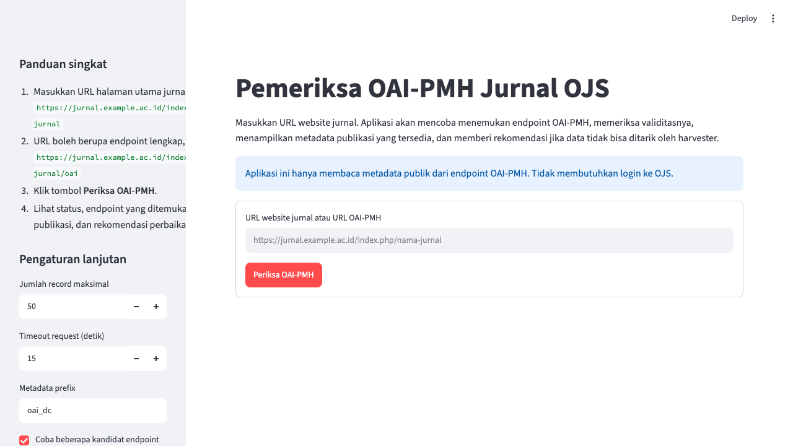

Input sederhana
Pengguna cukup memasukkan URL website jurnal. Aplikasi otomatis mencoba kandidat endpoint OAI-PMH umum untuk OJS.
OAI-PMH checker untuk jurnal OJS
Aplikasi Python dan Streamlit untuk menemukan endpoint OAI-PMH jurnal, memeriksa validitasnya, menampilkan metadata publikasi yang bisa dipanen harvester, dan memberi rekomendasi perbaikan untuk pengelola jurnal serta tim IT.
app.py.

Pengguna cukup memasukkan URL website jurnal. Aplikasi otomatis mencoba kandidat endpoint OAI-PMH umum untuk OJS.
Pemeriksaan mencakup Identify, ListMetadataFormats,
ListRecords, resumptionToken, dan skor kesiapan harvest.
Rekomendasi dipisahkan untuk pengelola jurnal dan tim IT agar masalah metadata, routing, server, SSL, atau OAI bisa ditangani oleh pihak yang tepat.
python -m venv .venvpip install -r requirements.txtstreamlit run app.py
Pilih repository ini di Streamlit Community Cloud, branch main, dan main file
path app.py.
Aplikasi hanya mengizinkan URL HTTP/HTTPS publik, memblokir localhost/private IP, membatasi redirect, ukuran respons, dan tidak mengambil PDF atau file besar.